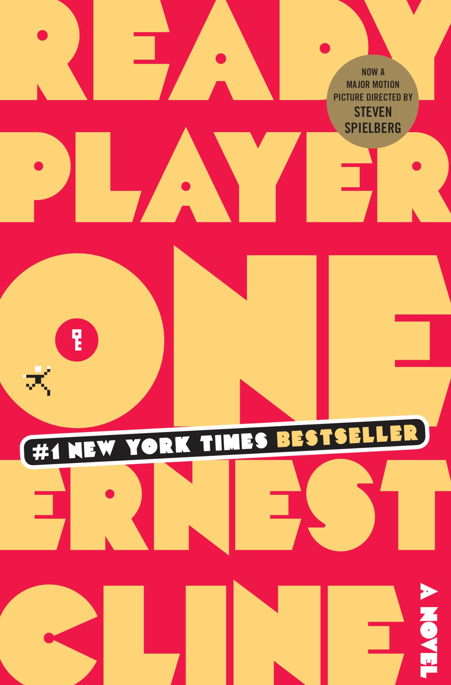

Ready Player One
by Ernest Cline
Book Cover
Film Poster

My Thoughts
Reading Ready Player One really highlights Ernest Cline's deep and broad knowledge of computer and video game history. His understanding of the evolution of technology and gaming culture enriches the story, making it both entertaining and thought-provoking. This novel is a must-read for anyone passionate about computers and video games.
One of the most fascinating aspects of the book is its rich references to classic video games and pop culture from the 1980s. For example:
- Atari 2600 – The console central to the story’s famous Easter egg hunt.
- Tempest – An iconic arcade game referenced for its challenging gameplay.
- Dungeons & Dragons – The classic tabletop role-playing game that heavily influences the book’s fantasy elements.
- Robotron: 2084 – A fast-paced arcade shooter that features in several pivotal scenes.
- WarGames – The 1983 film and related games inspiring some of the book’s hacking themes.
Beyond just nostalgia, the book is packed with interesting ideas and concepts that could inspire coding projects or game development experiments. The combination of virtual reality, puzzles, and 80s pop culture creates a unique playground for creativity.